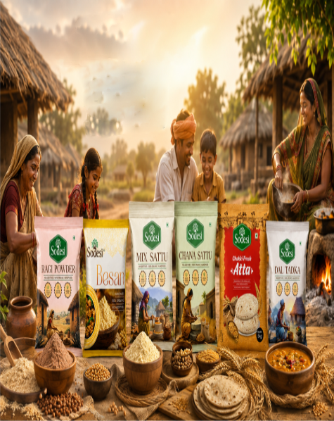

Loading pure goodness...
Loading pure goodness...
A legacy of purity, powered by tradition and innovation.

Sodesi was born in the fertile lands of Balipatana, Bhubaneswar, with a simple mission — to bring the purest traditional Indian foods to every home in India.
Founded by Mr. Sandeep Pattanaik, Sodesi began as a small family enterprise committed to reviving age-old food traditions while embracing modern quality standards. Today, we proudly serve thousands of families across India with organic atta, besan, ragi powder, chana chhatua, and premium sattu products.
To nourish India with 100% natural, ethically sourced, and traditionally processed foods that promote health, wellness and sustainable living.
To be India's most trusted organic food brand, leading the revival of traditional grains and empowering rural farmers with fair trade practices.
Premium grains sourced directly from trusted organic farms across Odisha, Bihar, and Madhya Pradesh.
Multi-stage cleaning removes impurities while preserving natural nutrients and flavor.
Stone-ground and cold-processed using traditional methods under strict hygienic conditions.
Vacuum-sealed in food-grade packaging to lock in freshness, aroma, and nutrition.
Delivered fresh to your doorstep across India through our trusted logistics network.
Completely licensed and regulated.
Reach across all states.
Direct from farmers, no middlemen.
Every batch quality verified.
Quality isn't a department at Sodesi — it's our DNA. From farm to pack, every step is monitored with precision.

"At Sodesi, food is more than a business — it is our seva to society. We believe every Indian family deserves the purest, healthiest food. Our commitment is not just to sell products, but to nurture a healthier nation, one family at a time."
Founder & Owner, Sodesi